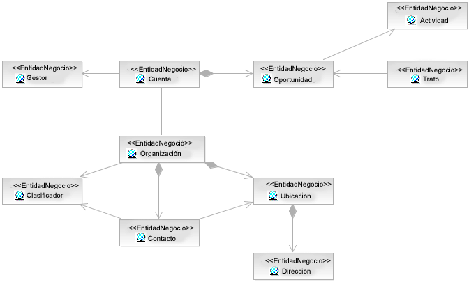

Para la mayoría de las organizaciones de TI dirigidas por empresas, la comprensión y la gestión de datos en forma de Artefacto: Entidad empresarial complejos es clave para el análisis y
el diseño de soluciones. Por eso, muchas soluciones incluirán servicios que actúen como servicios de gestión de datos y
la identificación de servicios tenderá a centrarse más en el Artefacto:
Modelo de datos o el Artefacto: Modelo de análisis empresarial. Desde el punto de vista de
la reconversión de aplicaciones en soluciones orientadas a servicios, los modelos de datos deben desarrollarse a partir
de las aplicaciones existentes que puedan utilizarse para identificar subconjuntos coherentes tratables como servicios
autónomos.
Siempre que sea posible, la creación de un dominio para toda la empresa es una actividad que tiene gran valor, el
modelo de dominio es un nivel superior de abstracción de un modelo de datos lógico más completo (consulte Artefacto: Modelo de datos) y, por tanto, se puede mantener con mayor
regularidad. Este modelo de dominio expresa los conceptos claves, en el sentido de Artefacto: Entidad empresarial, y puede considerarse que representa
los tipos de artefacto clave gestionados por un componente empresarial o un servicio empresarial (consulte Concepto: Modelado empresarial de componentes). De este modo, la agrupación lógica
de un modelo de dominio en un conjunto coherente de entidades dependiente puede ser un punto de partida para la
identificación de servicios (tratando el servicio como el propietario de las entidades). Por ejemplo, tenga en cuenta
el siguiente fragmento de modelo de dominio.

Vemos que el modelo de dominio identifica un conjunto de entidades empresariales que tienen dos competencias
empresariales principales: gestión de cuentas y de clientes. Es verdad que hay una relación importante entre
una cuenta y una organización; no obstante, estos dos tipos de artefacto se tratan muy a menudo por separado
y las operaciones tienden a realizarse en el nivel de la cuenta o la organización. Podemos asignar componentes
importantes del modelo de dominio a un Artefacto: Sistema empresarial (Componente empresarial en CBM)
de RUP , tal como se muestra a continuación.

Aunque esto nos ofrece una imagen clara en términos de propiedad de los tipos de artefacto relevantes, necesitamos ir
un paso más allá e identificar los servicios que el sistema empresarial ofrece a la organización y, en este caso, el
servicio suministrado para gestionar los tipos de artefacto identificados. Por tanto, dado el ejemplo ofrecido,
identificaríamos la entidad "Cuenta" como el artefacto principal propiedad del sistema empresarial "Gestión de cuentas"
y "Cliente" como el artefacto principal propiedad del sistema "Gestión de clientes". Así, proporcionaríamos un servicio
que permite el acceso a estas entidades, así como su actualización, tal como aparece en la siguiente figura.

De nuevo, estas especificaciones de servicio sólo representan servicios candidatos (consulte la propiedad de estado
del Artefacto: Especificación de servicio) y, como tales, necesitarían
ajustarse con detalles de las operaciones que proporcionan, en concreto, de las operaciones que permiten la
actualización de las entidades.
|